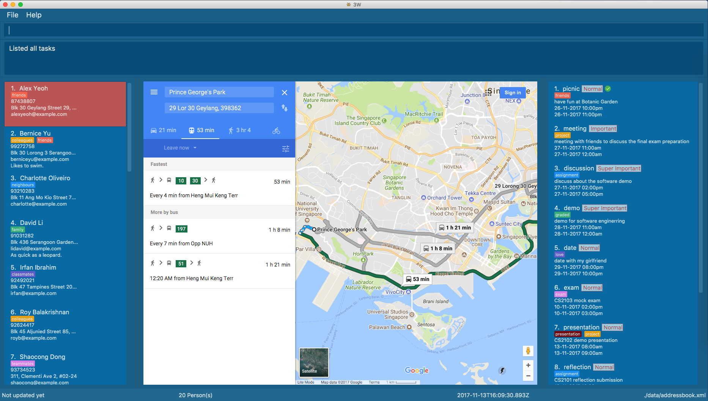

Who, What & Where



-
This is a desktop contact&task organizer application. It has a GUI but most of the user interactions happen using a CLI (Command Line Interface).
-
It is a Java product application by students in NUS module CS2103T
-
The base app, Address Book (level 4) is written in OOP fashion. It provides a reasonably well-written code example that is significantly bigger (around 6 KLoC)than what students usually write in beginner-level SE modules.
-
3W organize the users contacts, tasks, the linkage between this two, and corresponding location information.
Acknowledgements
-
This app is build based on Address Book (level 4) by SE-EDU team.
-
Some parts of this sample application were inspired by the excellent Java FX tutorial by Marco Jakob.